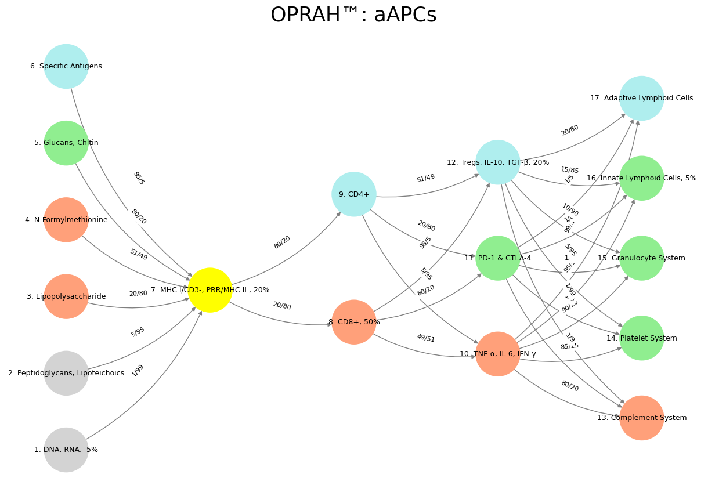

Transvaluation#
🪙 🎲 🎰 🗡️ 🪖 🛡️#
The architecture of the mammalian nervous system, when mapped onto a neural network and subsequently overlaid onto the immune system, offers a fascinating framework for understanding the interplay between biological systems and computational analogs. In this conceptual mapping, Layer 1, consisting of six nodes, represents the immutable laws of the cosmos and the planet—fundamental constraints akin to DNA, RNA, peptidoglycans, lipopolysaccharides, N-formylmethionine, glucans, chitin, and specific antigens. These nodes embody the Red Queen Hypothesis, where constant adaptation is required to maintain fitness amidst evolutionary pressures, mirroring the trial-and-error processes that shape both ecosystems and sensory inputs at a molecular level. Here, ligands and receptors function as complementary pairs, suggesting that “sensory” and “ecosystem” are equivalent in their foundational roles, establishing a static bedrock upon which higher layers build.

Fig. 23 Mapping the mammalian nervous system to a neural network and immune system: Layer 1 (6 nodes) sets cosmic laws and molecular inputs (DNA, antigens). Layer 2 (yellow node, G1 & G2) perceives via MHC/PRRs. Layer 3 splits into instinct (CD8+) and tempered (CD4+) decisions. Layer 4 balances self (TNF-α), mutual (PD-1), and other (Tregs). Layer 5 optimizes with five metrics (complement to lymphoid). Sensory and ecosystem align at ligand-receptor level, unifying adaptation across scales.#
🎭#
Layer 2, depicted as a singular yellow node encompassing sentinel and perception functions (G1 and G2), aligns with the immune system’s MHC class I and II molecules, pattern recognition receptors (PRRs), and associated signaling pathways. This layer serves as the bridge between the raw inputs of Layer 1 and the decision-making processes of Layer 3, much like the cranial nerve and dorsal root ganglia in the nervous system, which relay sensory information for further processing. In the immune context, this layer perceives molecular signatures—self versus non-self—initiating the cascade of recognition that dictates subsequent responses. It is a sentinel, vigilant and integrative, synthesizing environmental data into actionable signals.
🌊 🏄🏾#
Layer 3’s two decision nodes capture the split between rapid, instinctual responses and slower, deliberate processes, mapped onto the immune system as innate lymphoid cells (ILCs) versus CD4+ and CD8+ T cells. ILCs, being CD3-CD4- and recently elucidated, align with the nervous system’s quick, reflexive actions—like spinal reflexes or presynaptic autonomic ganglia—driving immediate, innate defenses. In contrast, CD4+ helper T cells and CD8+ cytotoxic T cells, both CD3+, reflect tempered, adaptive strategies, orchestrating cooperative immunity or targeted attacks with oversight from higher neural analogs. This division highlights a spectrum from primal reactivity to learned precision, enriched by ILCs’ instinctual role, mirroring dynamics across biological networks.
🤺 💵 🦘#
Layer 4, with its three equilibrium nodes—self (adversarial-sympathetic), mutual (cooperative-parasympathetic), and other (transactional-G3)—maps onto the immune system’s effector outcomes: proinflammatory cytokines like TNF-α, IL-6, and IFN-γ; inhibitory checkpoints like PD-1 and CTLA-4; and regulatory mechanisms via Tregs, IL-10, and TGF-β. These nodes echo the nervous system’s autonomic balance, where sympathetic and parasympathetic branches negotiate self-preservation and mutualistic stability, while a third, transactional element (akin to presynaptic autonomic ganglia) mediates external interactions. In this layer, the immune system achieves equilibrium, toggling between attack, restraint, and cooperation, reflecting the mammalian nervous system’s capacity to maintain homeostasis amidst competing demands.
🏇 🧘🏾♀️ 🪺 🎶 🛌#
Finally, Layer 5, comprising five optimizable functions or metrics—posteriori, a priori, likelihood, data, and ecosystem—corresponds to the immune system’s effector systems: the complement system, platelet system, granulocyte system, innate lymphoid cells, and adaptive lymphoid cells. This layer represents the culmination of processing, where the nervous system optimizes behavior based on experience, prediction, and environmental feedback, much like the immune system refines its responses through innate and adaptive arms. Here, the ecosystem reemerges as a unifying concept, tying molecular interactions back to the broader context of survival and adaptation. Just as the nervous system integrates sensory data into coherent action, the immune system leverages these metrics to sculpt a resilient, responsive network, perpetually tuned to the organism’s needs.
This mapping reveals a profound symmetry between the mammalian nervous system, computational neural networks, and the immune system, where each layer builds upon the last, transforming raw inputs into sophisticated outputs. The nervous system’s ganglia (G1-G3) find analogs in immune sentinels and regulators, while the immune system’s molecular cascades mirror neural decision-making and optimization. By treating sensory and ecosystem as equivalent at the ligand-receptor level, this framework underscores the unity of biological systems, where perception, response, and adaptation converge across scales—from the cosmic to the cellular—into a harmonious, self-regulating whole.
Show code cell source
import numpy as np
import matplotlib.pyplot as plt
import networkx as nx
# Define the neural network layers
def define_layers():
return {
'Suis': ['DNA, RNA, 5%', 'Peptidoglycans, Lipoteichoics', 'Lipopolysaccharide', 'N-Formylmethionine', "Glucans, Chitin", 'Specific Antigens'], # Static
'Voir': ['MHC.I/CD3-, PRR/MHC.II , 20%'],
'Choisis': ['CD8+, 50%', 'CD4+'],
'Deviens': ['TNF-α, IL-6, IFN-γ', 'PD-1 & CTLA-4', 'Tregs, IL-10, TGF-β, 20%'],
"M'èléve": ['Complement System', 'Platelet System', 'Granulocyte System', 'Innate Lymphoid Cells, 5%', 'Adaptive Lymphoid Cells']
}
# Assign colors to nodes
def assign_colors():
color_map = {
'yellow': ['MHC.I/CD3-, PRR/MHC.II , 20%'],
'paleturquoise': ['Specific Antigens', 'CD4+', 'Tregs, IL-10, TGF-β, 20%', 'Adaptive Lymphoid Cells'],
'lightgreen': ["Glucans, Chitin", 'PD-1 & CTLA-4', 'Platelet System', 'Innate Lymphoid Cells, 5%', 'Granulocyte System'],
'lightsalmon': ['Lipopolysaccharide', 'N-Formylmethionine', 'CD8+, 50%', 'TNF-α, IL-6, IFN-γ', 'Complement System'],
}
return {node: color for color, nodes in color_map.items() for node in nodes}
# Define edge weights (hardcoded for editing)
def define_edges():
return {
('DNA, RNA, 5%', 'MHC.I/CD3-, PRR/MHC.II , 20%'): '1/99',
('Peptidoglycans, Lipoteichoics', 'MHC.I/CD3-, PRR/MHC.II , 20%'): '5/95',
('Lipopolysaccharide', 'MHC.I/CD3-, PRR/MHC.II , 20%'): '20/80',
('N-Formylmethionine', 'MHC.I/CD3-, PRR/MHC.II , 20%'): '51/49',
("Glucans, Chitin", 'MHC.I/CD3-, PRR/MHC.II , 20%'): '80/20',
('Specific Antigens', 'MHC.I/CD3-, PRR/MHC.II , 20%'): '95/5',
('MHC.I/CD3-, PRR/MHC.II , 20%', 'CD8+, 50%'): '20/80',
('MHC.I/CD3-, PRR/MHC.II , 20%', 'CD4+'): '80/20',
('CD8+, 50%', 'TNF-α, IL-6, IFN-γ'): '49/51',
('CD8+, 50%', 'PD-1 & CTLA-4'): '80/20',
('CD8+, 50%', 'Tregs, IL-10, TGF-β, 20%'): '95/5',
('CD4+', 'TNF-α, IL-6, IFN-γ'): '5/95',
('CD4+', 'PD-1 & CTLA-4'): '20/80',
('CD4+', 'Tregs, IL-10, TGF-β, 20%'): '51/49',
('TNF-α, IL-6, IFN-γ', 'Complement System'): '80/20',
('TNF-α, IL-6, IFN-γ', 'Platelet System'): '85/15',
('TNF-α, IL-6, IFN-γ', 'Granulocyte System'): '90/10',
('TNF-α, IL-6, IFN-γ', 'Innate Lymphoid Cells, 5%'): '95/5',
('TNF-α, IL-6, IFN-γ', 'Adaptive Lymphoid Cells'): '99/1',
('PD-1 & CTLA-4', 'Complement System'): '1/9',
('PD-1 & CTLA-4', 'Platelet System'): '1/8',
('PD-1 & CTLA-4', 'Granulocyte System'): '1/7',
('PD-1 & CTLA-4', 'Innate Lymphoid Cells, 5%'): '1/6',
('PD-1 & CTLA-4', 'Adaptive Lymphoid Cells'): '1/5',
('Tregs, IL-10, TGF-β, 20%', 'Complement System'): '1/99',
('Tregs, IL-10, TGF-β, 20%', 'Platelet System'): '5/95',
('Tregs, IL-10, TGF-β, 20%', 'Granulocyte System'): '10/90',
('Tregs, IL-10, TGF-β, 20%', 'Innate Lymphoid Cells, 5%'): '15/85',
('Tregs, IL-10, TGF-β, 20%', 'Adaptive Lymphoid Cells'): '20/80'
}
# Calculate positions for nodes
def calculate_positions(layer, x_offset):
y_positions = np.linspace(-len(layer) / 2, len(layer) / 2, len(layer))
return [(x_offset, y) for y in y_positions]
# Create and visualize the neural network graph
def visualize_nn():
layers = define_layers()
colors = assign_colors()
edges = define_edges()
G = nx.DiGraph()
pos = {}
node_colors = []
# Create mapping from original node names to numbered labels
mapping = {}
counter = 1
for layer in layers.values():
for node in layer:
mapping[node] = f"{counter}. {node}"
counter += 1
# Add nodes with new numbered labels and assign positions
for i, (layer_name, nodes) in enumerate(layers.items()):
positions = calculate_positions(nodes, x_offset=i * 2)
for node, position in zip(nodes, positions):
new_node = mapping[node]
G.add_node(new_node, layer=layer_name)
pos[new_node] = position
node_colors.append(colors.get(node, 'lightgray'))
# Add edges with updated node labels
for (source, target), weight in edges.items():
if source in mapping and target in mapping:
new_source = mapping[source]
new_target = mapping[target]
G.add_edge(new_source, new_target, weight=weight)
# Draw the graph
plt.figure(figsize=(12, 8))
edges_labels = {(u, v): d["weight"] for u, v, d in G.edges(data=True)}
nx.draw(
G, pos, with_labels=True, node_color=node_colors, edge_color='gray',
node_size=3000, font_size=9, connectionstyle="arc3,rad=0.2"
)
nx.draw_networkx_edge_labels(G, pos, edge_labels=edges_labels, font_size=8)
plt.title("OPRAH™: aAPCs", fontsize=25)
plt.show()
# Run the visualization
visualize_nn()

Fig. 24 Nvidia vs. Music. APIs between Nvidias CUDA (server) & their clients (yellowstone node: G1 & G2) are here replaced by the ear-drum (kuhura) & vestibular apparatus (space). The chief enterprise in music is listening and responding (N1, N2, N3) as well as coordination and syncronization with others too (N4 & N5). Whether its classical or improvisational and participatory (time), a massive and infinite combinatorial landscape is available for composer, maestro, performer, audience (rhythm). And who are we to say what exactly music optimizes (semantics)? The mammalian nervous system’s architecture can be mapped onto a neural network and the immune system, revealing a layered interplay of function. Layer 1’s six nodes, embodying cosmic laws and molecular inputs like DNA and antigens, align with the Red Queen Hypothesis, equating sensory and ecosystem via ligand-receptor complementarity. Layer 2, a yellow sentinel node (G1 & G2), parallels MHC and PRRs, relaying perception like cranial and dorsal ganglia. Layer 3’s two decision nodes—instinct (CD8+) versus tempered processes (CD4+)—mirror neural reflexes and modulation. Layer 4’s three equilibrium nodes—self (TNF-α), mutual (PD-1), and other (Tregs)—reflect sympathetic, parasympathetic, and transactional balance. Layer 5’s five metrics (complement to lymphoid cells) optimize responses, akin to neural integration of experience and environment. This mapping highlights a unified biological logic across systems, from static foundations to adaptive outcomes.#